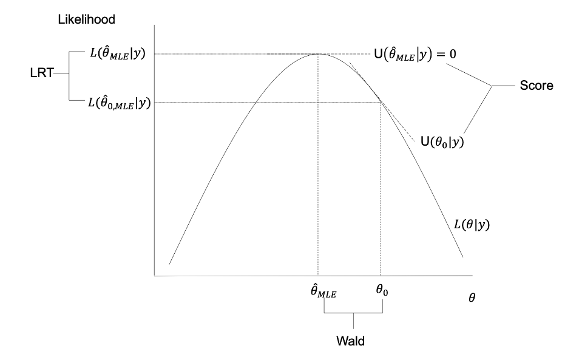

Week 10
So far we’ve done one-sample tests for proportions, two-sample tests for proportions, contingency tables, and we’ve really allowed for at most looking at one binary outcome and one binary covariate.
Now we ask what if we want to build a regression model to look at a binary outcome with multiple predictors, or adjusted for multiple other covariates.
We’ll work with the following lung surgery example:
Is there an association between time spent in the operating room and post-surgical outcomes?
We could choose from a number of possible outcome variables, including: * Hospital stay of >7 days * Number of major complications during the hospital stay
The first outcome is binary (\(Y \in \{ 0, 1 \}\)) and the second is a count variable (\(Y \in \{ 0, 1, 2, ... \}\)).
The scientific goal might be to characterize the relationship between such an outcome and a \(p\)-vector of covariatets, \(\mathbf{x}\).
Why can’t we just use linear regression? We could just specify a mean model where \(\mathbb E[Y_i | \mathbf{x}_i] = \mathbf{x}_i' \beta\) and estimate \(\beta\) via OLS and perform inference via the CLT (which tells us that \(\hat \beta \stackrel{\cdot}{\sim} \mathcal N\)?
OLS has nice properties under mild conditions: * if the mean model is correctly specified, \(\hat \beta_{OLS}\) is unbiased * OLS is generally robust to the distribution of the error terms * OLS is BLUE if the error terms are homoscedastic.
The first issue one might run into is heteroscedasticity. If \(Y_i\) is binary, then we know that it has to be Bernoulli distributed, such that under the mean model specification,
\[Y_i | \mathbf{x}_i \sim \text{Bernoulli}(\mu_i), \quad \text{ where } \mu = P(Y = 1) = \mathbb E(Y)\] \[ \mu_i = \mathbb E[Y_i | \mathbf{x}_i = \mathbf{x}_i' \beta]. \]
For the Bernoulli distribution, there is an implicit mean-variance relationship:
\[\text{Var}[Y_i | \mathbf{x}_i] = \mu_i (1 - \mu_i)\]
as long as \(\mu_i \neq \mu \forall i\), study units will be heteroscedastic (i.e., have non-constant variance).
As we’ve seen, heteroscedasticity isn’t a problem that goes away with large samples. It doesn’t go away with the central limit theorem.
Ignoring hteroscedasticity results in invalid inference, but we’ve seen three ways to remedy the situation: * Transform the response variable * Use OLS and base inference on a valid standard error * Use generalized least squares (GLS)
GLS can be a good option in discrete cases that is often under-appreciated, but it does have some limitations that lead many away from using it.
Recall \[\hat \beta_{GLS} = (\mathbf{X}'\mathbf{\Sigma}^{-1}\mathbf{X})^{-1} \mathbf{X}' \mathbf{\Sigma}^{-1} \mathbf{y}\] where if \(\text{Var}(Y_i | \mathbf{x}_i) = \mu_i (1-\mu_i)\), then
\[\Sigma = \text{diag}(\mu_1(1-\mu_1), ..., \mu_N(1-\mu_N))\]
and \(\hat \beta_{GLS}\) is BLUE.
Recall that in the typical OLS setting, the \(\Sigma\) matrix is given by \(\text{diag}(\sigma_1^2, ..., \sigma_N^2)\), but here we aren’t in a setting where \(Y = X \beta + \varepsilon\) and \(\text{Var}(\varepsilon) = \sigma^2\), but instead we’re in this setting where the variance of \(Y\) is informed by the Bernoulli distribution’s variance conditional on how the covariates inform the mean.
Recall that for uncorrelated data \(\hat \beta_{GLS}\) is the maximizer of a weighted least squares criterion, i.e., \(\sum{i=1}^n w_i (y_i - x_i' \beta)^2\) where \(w_i = (\text{Var}(Y_i | x_i))^{-1}\).
Thus we solve for \(\beta\) in
\[ 0 = \frac{\partial}{\partial \beta } \sum{i=1}^n w_i (y_i - x_i' \beta)^2\]
\[ 0 = \sum_{i=1}^n x_i w_i (y_i x_i' \beta)\]
So when \(w_i = (\mu_i (1- \mu_i))^{-1}\), the weighted least squared equations are \[0 = \sum_{i=1}^n \frac{x_i}{\mu_i ( 1- \mu_i)} (y_i - \mu_i).\]
In practice, we use the IRLS algorithm to estimate \(\hat \beta_{GLS}\).
\(\hat \beta_{GLS}\) is also the MLE when \(Y_i \sim \text{Bernoulli}(\mu_i)\). The likelihood and log-likelihood are given by
\[\mathcal L(\beta | y) = \prod_{i=1}^n \mu_i^{y_i} (1-\mu_i)^{1-y_i},\] \[\ell(\beta | y) = \sum_{i=1}^n [y_i \log (\mu_i) + (1-y_i) \log (1-\mu_i)].\]
To get the MLE, we take derivatives, set them equal to zero and solve. Following the algebra trail, we find that
\[\frac{\partial}{\partial \beta} \ell (\beta | y ) = \sum_{i=1}^n \frac{x_i}{\mu_i (1-\mu_i)} (y_i - \mu_i) \stackrel{set}{=} 0.\]
Thus the derivative of the log likelihood is equivalent to the weighted least squares equations, so \(\hat \beta_{GLS}\) is the MLE.
Often it’s fine to use this approach, but we’ll see some shortcomings soon.
GLS can accomodate heteroscedasticity for binary outcomes. If the model is correctly specified, GLS is optimal.
However, when modeling binary or count response data, the linear regression model doesn’t respect the fact that the outcome is bounded. The functional that is being modeled is bounded:
- in binary outcome settings: \(\mathbb E[Y_i | x_i] \in (0,1)\)
- in count outcome settings: \(\mathbb E[Y_i | x_i] \in (0,\infty)\),
but our current specifications of the mean model doesn’t impose any restrictions and only assumes \(\mathbb E[Y_i|x_i] = x_i' \beta\). This means we could get predictions that are outside the region of appropriate outcomes.
Is this a big deal? Only sometimes. The GLS approach works quite well for modeling binary outcomes and the coefficients from linear models are quite interpretable. So it’s a trade-off between coefficient interpretability and this property about restricting predictions to the specified set of possible outcomes.
Generalized Linear Models
Our goal is to develop statistical models to characterize the relationship between some response variable \(Y\) and a vector of covariates \(x\).
Statistical models consist of two components:
- A systematic component
- A random component
When moving beyond linear regression analysis of continuous and response data, we need to be aware of two key challenges: * Sensible specification of the systematic component * Proper accounting of any implicit mean-variance relationships arising from the random component.
Definition of a Generalized Linear Model
A generalized linear model (GLM) specifies a parametric statistical model for the conditional distribution of a response \(Y_i\) given a \(p\)-vector of covariates \(x_i\).
Consistes of three elements:
- A probability distribution for the outcome, \(Y_i \sim f_{Y}(y)\)
- A linear prediction equation, \(x_i' \beta\)
- A link function, \(g(\cdot)\).
The first of these elements is the random component, and elements 2 and 3 jointly specify the systematic component.
In practice, we see a wide range of response variables with a wide range of associated (possible) distributions
| Response Type | Range | Possible Distribution |
|---|---|---|
| Continuous | \((-\infty, \infty)\) | \(\mathcal N(\mu, \sigma^2)\) |
| Binary | \(\{0, 1\}\) | \(\text{Bernoulli}(\pi)\) |
| Polytomous | \(\{1, ..., K \}\) | \(\text{Multinomial}(\pi_k)\) |
| Count | \(\{0, 1, ..., n \}\) | \(\text{Binomial}(n, \pi)\) |
| Count | \(\{1, 2, ..., \}\) | \(\text{Poisson}(\lambda)\) |
| Positive | \((0, \infty)\) | \(\text{Gamma}(\alpha, \beta)\) |
For a given choice of probability distribution, a GLM specifies a model for the conditional mean:
\[ \mu_i = \mathbb E[Y_i | x_i] \]
How do we specify a reasonable model for \(\mu_i\) while ensuring that we respect the appropriate range/scale of \(\mu_i\)?
Achieved by constructing a linear predictor \(x_i' \beta\) and relating it to \(\mu_i\) via a link function \(g(\cdot)\):
\[g(\mu_i) = x_i' \beta.\]
We often specify \(g(\cdot)\) such that \(g^{-1}(x_i' \beta) = \mu\) respects the appropriate bounds on \(\mu_i\).
We’ll sometimes use the shorthand \(\eta_i = x_i' \beta\).
How is it that the regular linear model is a trivial GLM? Isn’t it the case that we only make distributional assumptions on \(\varepsilon\) and not on \(Y\)? Yes, but because a normal distribution plus a constant is still normally distributed (but this is not true for other distributions, e.g., a Binomial or Bernoulli distribution).
In the linear model we assume \(Y_i = X_i \beta + \epsilon_i\), so we could write \(Y \sim \mathcal N(X_i \beta, \sigma^2)\) giving us the distributional assumption on \(Y\).
If we suppose that \(X_i \sim \text{Bernoulli}(\pi)\), we can’t model \(X_i \beta + \varepsilon_i\) as another Bernoulli distribution where \(\varepsilon\) is Bernoulli distributed.
This is why we’re going to have to write \(Y_i \sim f_Y\) and \(g(\mu_i) = X_i \beta\).
Exponential Family
GLMs form a class of statistical models for response variables whose distribution belongs to the exponential dispersion family
These are the family of distributions with a pdf/pmf of the form:
\[f_Y(y; \theta, \phi) = \exp \left\{ \frac{y \theta - b(\theta)}{a(\phi)} + c(y, \phi) \right\},\]
where \(\theta\) is the canonical parameter, \(\phi\) is the dispersion parameter, and \(b(\theta)\) is the cumulant function.
We will see that \(\theta\) is always a function of the conditional mean, \(\mu_i\).
Note that the \(c(y, \phi)\) should not depend on \(\theta\).
Bernoulli in the Exponential Notation
Let \(Y \sim \text{Bernoulli}(\mu)\).
A common first step is to apply a convenient transformation that is equivalent to the identity function: \(\exp(\log(\cdot))\).
\[ \begin{aligned} f_Y(y ; \mu ) & = \mu^y (1- \mu)^{1-y} \\ & = \exp \{ y \log(\mu) + (1-y) \log (1-\mu) \} \\ & = \exp \left\{ y \log \left( \frac{\mu}{1-\mu} \right) + \log(1-\mu) \right\} \end{aligned} \]
Let
\[ \begin{aligned} \theta = \log\left( \frac{\mu}{1-\mu} \right) \quad \quad & b(\theta) = \log (1 + \exp \{ \theta \}) \\ a(\phi) = 1 \quad \quad & c(y, \phi) = 0 \end{aligned} \]
Then \[ \begin{aligned} f_Y(y; \theta, \phi) & = \exp \{ y \theta - \log (1 + \exp \{ \theta \} ) \} \\ & = \exp \left\{ \frac{y \theta - b(\theta) }{a(\phi)} + c(y, \phi) \right\}. \end{aligned} \]
Many other common distributions are members of this faimly. The canonical parameter \(\theta\) has key relationships with both \(\mathbb E(Y)\) and \(\text{Var}(Y)\). Typically varies across study units since \(\mathbb E(Y_i) = \mu_i\). We also index \(\theta\) by \(i\), as in \(\theta_i\).
The dispersion parameter \(\phi\) has a key relationship with \(\text{Var}(Y)\). It may, but does not typically, vary across study units. Typically it is not unit-specific, so we just write \(\phi\). In some settings, we may have \(a(\cdot)\) vary with \(i\), as in $\(a_i(\phi)\). E.g., \(a_i(\phi) = \phi / w_i\) where \(w_i\) is the prior weight.
When the dispersion parameter is known, some may say that this distribution is a member of the natural exponential family.
Consider the likelihood function for a single observation
\[\mathcal L(\theta_i, \phi ; y_i) = \exp \left\{ \frac{y_i \theta - b(\theta_i)}{a_i(\phi)} + c(y_i, \phi) \right\}.\]
The log-likelihood is
\[\ell(\theta_i, \phi; y_i) = \frac{y_i \theta_i - b(\theta_i)}{a_i(\phi)} + c(y_i, \phi).\]
The first partial derivative with respect to \(\theta_i\) is the score function for \(\theta_i\) and is given by
\[\frac{\partial}{\partial \theta_i} \ell (\theta_i, \phi; y_i) = U(\theta_i) = \frac{y_i - b'(\theta_i)}{a_i(\phi)}.\]
Note that we consider \(\frac{\partial}{\partial \theta_i} \ell (\theta_i, \phi; y_i)\) for the purpose of showing properties of exponential families (not for doing estimation).
We know that (under some regularity conditions)
\[ \begin{aligned} \mathbb E[U(\theta_i)] & = 0 \\ \text{Var}[U(\theta_i)] & = \mathbb E[U(\theta_i)^2] = \mathbb E\left[ \frac{\partial U(\theta_i)}{\partial \theta_i} \right] \end{aligned} \]
We will use these properties to get expressions for \(\mathbb E(Y_i)\) and \(\text{Var}(Y_i)\) in terms of the exponential family parameters.
Since the score has mean zero,
\[\mathbb E(U(\theta_i)) = \mathbb E\left[ \frac{Y_i - b'(\theta_i)}{a_i(\phi)} \right] = 0 \]
and, consequently,
\[\mu_i = \mathbb E[Y_i] = b'(\theta_i).\]
Recap of Likelihood Theory
The MLE of \(\theta\), denoted \(\hat \theta_{MLE}\) is obtained by solving the score equations with respect to \(\theta\):
\[U(\theta | y) = \frac{\partial}{\partial \theta} \ell (\theta | y) = 0\]
Under some regularity conditions,
\[\hat \theta_{MLE} \sim \text{MVN}_p (\theta, \mathcal I_n(\theta)^{-1})\]
where \(\mathcal I_n(\theta)\) is the Fisher information matrix with
\[\mathcal I_n(\theta)_{j,k} = -\mathbb E\left[ \frac{\partial^2 \ell (\theta | y)}{\partial \theta_j \partial \theta_k \right]\]
We can estimate \(\text{Var}(\hat \theta_{MLE}) \approx \mathcal I_n(\theta)^{-1}\) by plugging in \(\hat \theta_{MLE}\).
The Wald test is measuring the distance between the MLE and the null value.
\[(\hat \theta_{1,MLE} - \theta_{1,0})^{T} \widehat{\text{Var}}(\hat \theta_{1,MLE})^{-1} (\hat \theta_{1,MLE} - \theta_{1,0}) \stackrel{d}{\longrightarrow} \chi_q^2 \]
The Score test finds the first derivative of the log likelihood at the null value. If this derivative is large, then that means that this null value is far away from the MLE.
\[U(\hat \theta_{0,MLE} | y)' \mathcal I_n(\hat \theta_{0,MLE})^{-1} U(\hat \theta_{0, MLE} | y) \stackrel{d}{\longrightarrow} \chi_q^2 \]
The Likelihood ratio test
\[2 \left( \ell(\hat \theta_{MLE} | y) - \ell(\hat \theta_{0,MLE}|y) \right) \stackrel{d}{\longrightarrow} \chi_q^2 \]
Asymptotically, these should all give the same results, but in small data settings these may differ.
The Fisher information is essentially the negative second derivative of the likelihood function. Since the variance of \(\hat \theta_{MLE}\) can be estimated by \(\approx \mathcal I_n(\theta)^{-1}\), if the likelihood function is a very steep (downward) parabola, its second derivative will have large magnitude, and its inverse will thus be small.
Exponential Family Log-Likelihood and Score
Consider the likelihood function for a single observation
\[\mathcal L(\theta_i, \phi; y) = \exp \{ \frac{y_i \theta_i - b(\theta_i)}{a_i(\phi)} + c(y_i, \phi) \}\]
\[\frac{partial}{\partial \theta_i} \ell(\theta_i, \phi; y_i) = U(\theta_i) = \frac{y_i - b'(\theta_i)}{a_i(\phi)}\]
From previously,
\[\mathbb E[U(\theta_i)] = 0\]
\[\text{Var}[U(\theta_i)] = \mathbb E[U(\theta_i)^2] = -\mathbb E\left[ \frac{\partial U(\theta_i)}{\partial \theta_i} \right]\]
Since this score has mean zero,
\[\mathbb E(U(\theta_i)) = \mathbb E(\frac{Y_i - b'(\theta_i)}{a_i(\phi)}) = 0\]
and hence
\[\mu_i = \mathbb E[Y_i] = b'(\theta_i).\]
Variance in Exponential Families
The second partial derivative is
\[\frac{\partial^2}{\partial \theta_i^2} \ell(\theta_i, \phi; y) = - \frac{b''(\theta_i)}{a_i(\phi)}\]
Using the above properties, it follows that
\[\text{Var}(U(\theta_i)) = \text{Var}\left[ \frac{Y_i - b'(\theta_i)}{a_i(\phi)} \right] = \frac{b''(\theta_i)}{a_i(\phi)}\]
so that
\[\text{Var}[Y_i] = b''(\theta_i)a_i(\phi)\]
The variance of \(Y_i\) is therefore a function of both \(\theta_i\) and \(\phi\).
Note that the canonical parameter is a function of \(\mu_i\)
\[\mu_i = b'(\theta_i) \Rightarrow \theta_i = b'^{-1}(\mu_i) = \theta(\mu_i)\]
so that we can write
\[\text{Var}[Y_i] = b''(\theta_i)a_i(\phi) = b''(\theta(\mu_i))a_i(\phi)\]
The function \(V(\mu_i) = b''(\theta(\mu_i))\) is called the variance function.
The specific form indicates the nature of the (if any) mean-variance relationship.
Bernoulli Example
Let \(Y \sim \text{Bernoulli}(\mu)\).
\[\theta = \log \left( \frac{\mu}{1-\mu} \right), \quad \quad \text{ the logit of } \mu\]
\[a(\phi) = 1\]
\[b(\theta) = \log(1 + \exp \theta)\]
\[\mathbb E[Y] = b'(\theta) = \frac{\exp \theta }{1 + \exp \theta} = \mu, \quad \quad \text{ the expit of } \theta\]
\[\text{Var}[Y] = b''(\theta)a(\phi) = \frac{\exp \theta}{(1 + \exp \theta)^2} = \mu(1 - \mu) = V(\mu)\]
The Systematic Component
The systematic component is the specification of how the distribution \(Y \sim f_Y(y; \theta, \phi)\) (where \(f_Y\) is an exponential family distribution) depends on the covariates \(x_i\).
In GLMs we model the conditional mean \(\mu_i = \mathbb E[Y_i | x_i].\)
This provides a connection between \(x_i\) and the distribution of \(Y_i\) via the canonical parameter \(\theta_i\) and the cumulant function \(b(\theta_i)\).
\[f_Y(y) \longrightarrow \theta_i \longrightarrow \mu_i \longrightarrow x_i'\beta \quad \text{(a.k.a. }\eta_i)\]
Typically we link the linear predictor of the distribution of \(Y\) via a transformation of \(\mu_i\), \(g(\cdot)\), so that
\[g(\mu_i) = x_i'\beta\]
Traditionally this is broken into two parts:
- the linear predictor, \(\eta_i = x_i' \beta\)
- the link function \(g(\mu_i) = \eta_i\)
Sometimes you’ll find the ‘predictor component’ of the model called the ‘systematic component’, as in McCullough and Nelder (1989). In practice, one cannot consider one without the other since the relationship between \(\mu_i\) and \(x_i\) are jointly determined by \(\beta\) and \(g(\cdot)\).
Constructing the linear predictor for a GLM follows the same process one uses for linear regression.
Given a set of covariates \(x_i\), there are two decisions.
- which covariates to include?
- how to include them in the model?
For the most part, decisions to include covariates should be driven by scientific considerations
- is the goal estimation or prediction?
- is there a primary exposure of interest?
- are any of the covariates effect modifiers? confounders?
We will see that there are some differences (from multiple linear regression) when it comes to identification of confounders.
In the GLM framework, we’ll want to note that the inverse of the link function provides the specification of the model on the scale of \(\mu_i\)
\[\mu_i = g^{-1}(x_i' \beta)\]
so we often choose \(g()\) such that \(g^{-1}(x_i' \beta)\) respects any bounds on \(\mu_i\).
We interpret the link function as specifying a transformation of the conditional mean, \(\mu_i\).
We are not specifying a transformation of the response \(Y_i\).
We are writing \(g(\mathbb E(Y_i|x_i))\), not \(\mathbb E(g(Y_i) | x_i) = x_i'\beta\).
Recall that the mean and the canonical parameter are linked via the derivative of the cumulant function.
\[\mathbb E[Y_i] = \mu_i = b'(\theta_i)\]
An important link function is the canonical link:
\[g(\mu_i) = \theta(\mu_i) = b'^{-1}(\mu_i),\]
i.e., the function that results by viewing the canonical parameter \(\theta_i\) as a function of \(\mu_i\).
We’ll see later that this choice results in some mathematical convenience.
| Linear regression | Logistic regression | Poisson regression | |
|---|---|---|---|
| Outcome type | Continuous | Binary | Count |
| Link | Identity | Logit | |
| Systematic component | \(\mu_i = x_i'\beta\) | \(\log(\mu_i / (1-\mu_i) = x_i' \beta)\) or \(\mu_i = \exp(x_i'\beta)/(1+\exp (x_i'\beta))\) | \(\log(\mu_i) = x_i'\beta\) or \(\mu_i = \exp(x_i' \beta)\) |
| Inv. link | Identity | Expit | Exponential |
Choosing \(g()\)
Common link functions include:
- identity
- log
- logit, \(g(\mu_i) = \log \left( \frac{\mu_i}{1-\mu_i} \right)\)
- probit
- complementary log-log \(g(\mu_i) = \log ( - \log(1-\mu_i))\)
We typically choose a \(g()\) via consideration of two issues:
- Respect the range of values that \(\mu_i\) can take
- Impact on the interpretability of \(\beta\)
Frequentist Estimation and Inference
Given an i.i.d. sample of size \(n\), the log-likelihood is
\[\ell(\beta, \phi; y) = \sum_{i=1}^n \left[ \frac{y_i \theta_i - b(\theta_i)}{a_i(\phi)} + c(y_i, \phi)\right]\]
Estimation
There are \((p+2)\) unknown parameters: \((\beta, \phi)\).
To obtain the MLE we need to solve the score equations:
\[U(\beta, \phi | y) = \left( \frac{\partial \ell}{\parital \beta_0}, ..., \frac{\partial \ell}{\partial \beta_p}, \frac{\partial \ell}{\partial \phi} \right)' = 0\]
This is a system of \(p+2\) equations. The contribution to the score for \(\phi\) is the \(i^{\mathrm{th}}\) unit is \[\frac{\partial \ell}{\partial \phi} = - \frac{a_i'(\phi)}{a_i(\phi)^2}(y_i \theta_i - b(\theta_i)) + c'(y_i, \phi)\]
We can use the chain rule to obtain a convenient expression for the \(i^{\mathrm{th}}\) contribution to the score function for \(\beta_j\):
\[\frac{\partial \ell}{\partial \beta_j} = \frac{\partial \ell}{\partial \theta_i} \times \frac{\partial \theta_i}{\partial \mu_i} \times \frac{\partial \mu_i}{\partial \eta_i} \times \frac{\partial \eta_i}{\partial \beta_j}\]
Note the following results:
\[\frac{\partial \ell}{\partial \theta_i} = \frac{y_i - b'(\theta_i)}{a_i(\phi)} = \frac{y_i-\mu_i}{a_i(\phi)}\]
\[\frac{\partial \theta_i}{\partial \mu_i} = \left( \frac{\partial \mu_i}{\partial \theta_i} \right)^{-1} = (b''(\theta_i))^{-1} = (V(\mu_i))^{-1}\]
\[\frac{\partial \eta_i}{\partial \beta_j} = x_{ij}\]
The score function for \(\beta_j\) can therefore be written as \[\partial \ell}{\partial \beta_j} = \sum_{i=1}^n \frac{\partial \mu_i}{\partial \eta_i} \frac{x_{ij}}{V(\mu_i)a_i(\phi)} (y_i - \mu_i)\]
Suppose \(a_i(\phi) = \phi / w_i\). The score equations become
\[\frac{\partial \ell}{\partial \phi} = \sum_{i=1}^n - \frac{w_i ( y_i \theta_i - b(\theta_i))}{\phi^2} + c' (y_i, \phi) = 0\]
\[\frac{\partial \ell}{\partial \beta_j} = \sum_{i=1}^n w_i \frac{\partial \mu_i}{\partial \eta_i} \frac{x_{ij}}{V(\mu_i)} (y_i - \mu_i) = 0\]
Notice that the \((p+1)\) score equations for \(\beta\) do not depend on \(\phi\).
Consequently, obtaining the MLE of \(\beta\) doesn’t require knowledge of \(\phi\).
\(\phi\) isn’t required to be known or estimated (if unknown).
For exmaple, in linear regression, we don’t need \(\sigma^2\) (or \(\hat \sigma^2\)) to obtain \[\hat \beta_{MLE} = (X^T X)^{-1} X^T Y\]
Inference does require an estimate of \(\phi\).
Asymptotic Sampling Distribution
Subject to appropriate regularity conditions,
\[ \begin{bmatrix} \hat \beta_{MLE} \\ \hat \phi_{MLE} \end{bmatrix} \stackrel{\cdot}{\sim} \text{MVN} \left( \begin{bmatrix} \beta \\ \phi \end{bmatrix}, \mathcal I_n(\beta, \phi)^{-1} \right) \]
Now we can compute the components of \(\mathcal I_n(\beta, \phi):\)
\[\begin{aligned} \frac{\partial^2 \ell(\beta, \phi; y_i)}{\partial \beta_j \partial \beta_k} & = \frac{\partial}{\partial \beta_k} \overbrace{\left\{ \frac{\partial \mu_i}{\partial \eta_i} \frac{x_{ij}}{V(\mu_i)a_i(\phi)} (y_i - \mu_i) \right\}}^{\text{score for } \beta_j} \\ & = (y_i-\mu_i) \frac{\partial}{\partial \beta_k} \left\{ \frac{\partial \mu_i}{\partial \eta_i} \frac{x_{ij}}{V(\mu_i) a_i(\phi)} \right\} - \left( \frac{\partial \mu_i}{\partial \eta_i} \right)^2 \frac{x_{ij} x_{ik}}{V(\mu_i)a_i(\phi)} \end{aligned}\]
And hence
\[-\mathbb E\left[ \frac{\partial^2 \ell}{\partial \beta_j \partial \beta_k} \right] = \sum_{i=1}^n \left( \frac{\partial \mu_i}{\partial \eta_i} \right)^2 \frac{x_{ij}x_{ik}}{V(\mu_i)a_i(\phi)} \]
\[ \begin{aligned} \frac{\partial^2 \ell(\beta, \phi; y_i)}{\partial \phi \partial \phi} & = \frac{\partial}{\partial \phi} \overbrace{\left\{ - \frac{a_i'(\phi)}{a_i(\phi)^2} (y_i \theta_i - b(\theta_i)) + c'(y_i, \phi) \right\}}^{\text{score for } \phi} \\ & = - \left\{ \frac{a_i(\phi)^2 a_i'\right\} \end{aligned} \]
Lab
Throughout this course, we’ve discussed “asymptotic” properties of estimators, including consistency \((\hat \theta \stackrel{p}{\to} \theta)\). We’ve also discussed asymptotic tests — for example, F-tests which converge to a \(\chi^2\) distribution in large samples. However, previous discussions have been limited to models involving normally distributed rnadom variables.
Asymptotic likelihood theory provides a framework by which we can construct estimators with optimal properties for arbitrary distributions, as well as asymptotic tests based on those estimators. Consider an analysis of a random sample such that
\[Y_1, ..., Y_n \stackrel{iid}{\sim} f(y_i \mid \theta)\]
and we are interested in drawing inference \(\theta\) (which may be a vector of parameters). Let \(\mathbf{Y} = (Y_1, ..., Y_n)\). Then we can define several components of a likelihood model:
The likelihood:
\[\mathcal L(\theta \mid \mathbf{Y}) = f(y \mid \theta) = \prod_{i=1}^n f(y_i \mid \theta)\]
Log-likelihood:
\[\ell(\theta \mid y) = \log \mathcal L(\theta \mid y) = \sum_{i=1}^n \log f(y_i \mid \theta)\]
Score:
\[U(\theta \mid y) = \frac{\partial}{\partial \theta} \ell (\theta \mid y) = \left( \frac{\partial}{\partial \theta_1} \ell(\theta \mid y), ..., \frac{\partial}{\partial \theta_1} \ell(\theta \mid y) \right)\]
The Score
Information Matrix
\[\mathcal I(\theta) = \mathbb E( U(\theta | y) \otimes U(\theta \mid y)^T) \]
Since \(\mathbb E[U(\theta \mid y)]^2 = 0\).
This is the variance of the score. Under regularity conditions, the \((i,j)\)th entry is equal to \[- \mathbb E( \frac{\partial^2}{\partial \theta_i \partial \theta_j} \ell ( \theta \mid y)).\]
As we’ve seen previously, the MLE is the solution to \(U(\theta \mid y) = 0\).
The nice property of this estimator is that, for distributions with reasonably well-behaved likelihood functions, \(\hat \theta_{MLE}\) is consistent and asymptotically normal (CAN). Therefore
\[\sqrt{n} (\hat \theta_{MLE} - \theta) \stackrel{\mathcal D}{\to} \mathcal N(0, \mathcal I(\theta)^{-1}).\]
This identity is from where “asymptotic tests” come from — no matter the true distribution of \(\mathbf Y\), \(\hat \theta_{MLE}\) will be asymptotically normal (or \(\chi^2\) if we square the estimator). There are three different ways, denoted in the figure below, to construct asymptotic tests of \(H_0 : \theta = \theta_0\) — each is obtained by using the above identity in a different way.

Wald Test
Directly evaluates whether \(\hat \theta_{MLE}\) is consistent with \(H_0 : \theta = \theta_0\).
\[W_n = (\hat \theta_{MLE} - \hat \theta_0)^T \mathcal I(\hat \theta_{MLE}) (\hat \theta_{MLE} - \theta_0) \approx \chi^2(p)\]
Note that if \(\theta\) is one dimensional this simplifies to
\[W_n = (\hat \theta_{MLE} - \theta_0) \mathcal I(\hat \theta_{MLE})^{1/2} \approx \mathcal N(0,1)\]
- Advantages: Simple to compute, easy to construct confidence interval
- Disadvantages: requires MLE, approximation not as accurate in small samples
Score Test
Asks “how consistent is the observed data with the null hypothesis?” and answers this by considering the gradient of the log-likelihood at the value specified by \(H_0\) (should be close to 0).
\[S_n = U(\theta_0 \mid y)^{T} \mathcal I(\theta_0)^{-1} U(\theta_0 \mid y) \approx \chi^2(p)\]
Note thta if \(\theta\) is 1-dimensional, we can simplify this expression to
\[S_n = U(\theta_0 \mid y) \mathcal I(\theta_0)^{-1/2} \approx \mathcal N(0, 1)\]
- Advantages: Do not need to compute MLE, more computationally efficient.
- Disadvatage: Hard to construct confidence intervals since inverting this equation is difficult.
Note to remember: For all of the above, if our null hypothesis is a function of multiple parameters, we can construct a \(C\) matrix and test \(C \theta\) just as we did for the linear model in the first half of the course.
Likelihood Ratio Test
Considers the relative likelihood of the “best fitting model” under no restrictions to the model under \(H_0\).
\[Q_n = 2 \left( \ell(\hat\theta_{MLE} - \ell(\theta_0) \right) \approx \chi^2(p)\]
- Advantages: No derivatives needed, most accurate approximation
- Disdvantage: Requires both MLE and knowledge of log-likelihood under \(H_0\).
Inference on a single proportion
Suppose we have data on the number of independent successes in a population of \(n\) study units. This gives rise to the model
\[Y \sim \text{Binom}(n, \pi)\]
Suppose our goal is to estimate \(\pi\) and test the null hypothesis \(H_0 : \pi = \pi_0\). There are two ways to do this: we can either conduct an asymptotic \(\chi^2\) test using one of the three previously discussed options, or we can perform an “exact” test by comparing observed values against the Binomial distribution directly.
Asymptotic Inference
For any test we use, we’ll need the components of the likelihood. Recall that the pmf of the Binomial distribution is
\[{n \choose y} \pi^y (1-\pi)^{n-y}\]
Start by writing out the log-likelihood, score, and information for this model. Note that the information matrix will only be a single value since we only have one parameter \(\pi\) and that we will only have one observation \(Y\).
\[\begin{aligned} \ell(\pi \mid y) & = \log \left( {n \choose y} \pi^y (1-\pi)^{n-y} \right) \\ & = \log({n \choose y}) + y \log \pi + (n - y) \log (1-\pi) \\ & \propto y \log( \pi / (1-\pi)) + n \log (1-\pi).\end{aligned} \]
$$U(y) = y() ( \frac{1-- (-)}{ )
(y) = $$
$$I() = -
Find the MLE of \(\pi\).
\[\begin{aligned} \frac{n \pi(1-2\pi)}{\pi^2(1-\pi)^2} + \frac{n \pi }{\pi (1-\pi)^2} & = \frac{n - 2n \pi + n \pi}{\pi (1-\pi)^2} \\ & = \frac{n}{\pi (1-\pi)} \end{aligned} \]
\[U(\pi) = 0 \Rightarrow \frac{y}{n(1-\pi)} = \frac{n}{1-\pi} ...\]
Derive the Wald statistic using the definition.
Now invert this test statistic to obtain a \(1-\alpha\) percentile Wald-style confidence interval.
What potential issue might arise when using a Wald test statistic?
Derive the Score test statistic using the definition.
Prove that inverting this test statistic to obtain a \(1-\alpha\) percentile Score-style confidence interval yields …